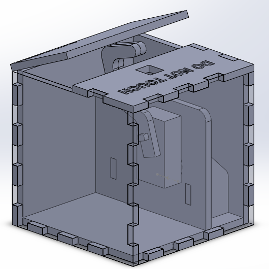

I'm sure that if you've found your way to my website you've seen this video. Here's my version of the useless box.
This is the cad, I used Solidworks. The outside is just a cube held together with glued finger joints, and on the inside is the motor mount. I've seen laser cut boxes (like the one in the ThinkGeek video) that use a combination of finger joints and bolts, but I don't really like that aesthetic. The advantage of that design is that you can take it apart later if you need to. Because I would only ever need to open up this box to change the batteries, I just left one side unglued (duct tape).
Here's how it works. The switch on the top of the box is a DPDT switch. When you flip it, it changes the polarity at the leads of the motor. This changes the direction that the motor turns, so when you flip the switch the motor starts turning the arm towards the switch. Once the arm reaches and flips the switch it starts turning in the opposite direction. When the arm is inside of the box it pushes down against a limit switch that turns off the motor. It took a while to find a cheap motor with enough torque to turn the switch, and I'm running it at twice the recommended voltage. I'm not too worried about the health of the motor because it runs for such a short time. I was originally a little concerned about resting current drain from the motor because, in theory, it's cycling on and off between pushing down on the limit switch, turning off and letting the switch back up, and then turning back on to push the switch again. If this is happening, it's negligible; the limit switch is very easy to press.
Here you can see how everything fits together inside the box. The hinges are just pieces of fabric and the front panel is taped on in case I ever need to change the batteries.
This was a great project that had a lot of very interesting problems. Right now I'm using it as a bookend in my room, and It's always fun to show to people who don't know what it'll do.